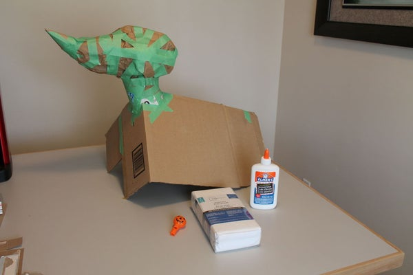
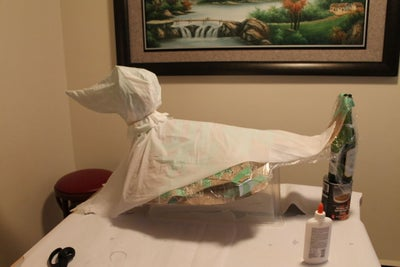
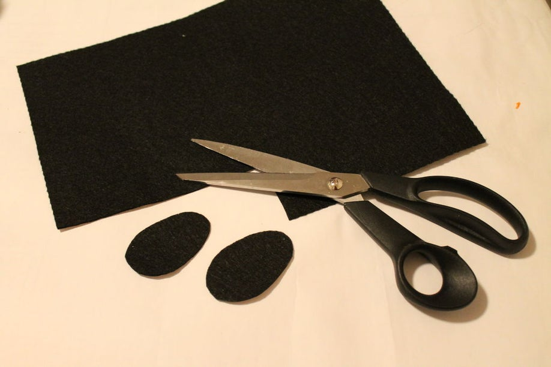
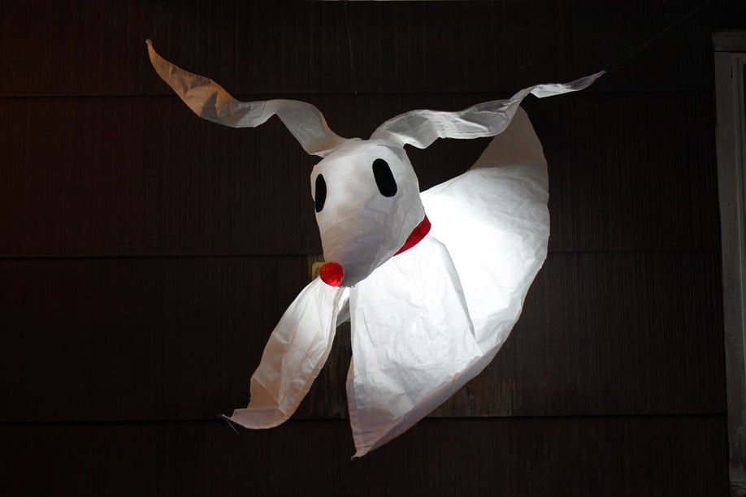

Here's a Halloween Decoration of the character Zero from "The Nightmare Before Christmas"
Step 1: Create a form and then you cover it in fabric and stiffen the fabric before finally removing the body form to be left with just the fabric shape.
Zero's body is pretty simple, it's just a head on the end of a long pyramid.
Start by cutting a cardboard box in half diagonally. Secure the end with tape.
For the neck, cut a plastic container to size and attach it to the body with tape.
To build the head, cut off part of the pop bottle and wrap it in tape to make it more narrow at the open end.
Add tear drop shaped cardboard sides and a strip of thin cardboard to round out the back.
Build up the shape of the head with scrunched up paper and more tape. Be sure to properly shape around the eyes with strips of cardboard and more paper.
Add a cardboard strips for the tail and to round out the back of the body box.
Cover everything in plastic wrap.

Step 2: For the main body, cut a triangle of white fabric with a circle cut out for the neck. You can use very thin fabric for a more ghostly appearance, we just used the cheapest sheet we could find.
Drape the fabric over the body and secure the neck with masking tape.
Wrap fabric around the head and trim it to size. Use string to hold the fabric around the head and neck.
The fabric will absorb the glue better if you first dampen it with a little water. Damp fabric will also be easier to shape around the head.
Mix glue with a little warm water and paint it over the entire thing. To raise the tips of his front paws you can use string taped to the walls or any other support you have handy.
Allow to dry and apply additional coats of glue until it will hold it's shape

Step 3: Remove the fabric from the body form.
Add wire to the front edges and "spine" to help hold the shape. Secure with hot glue.
Use hot glue to attach the head to the body and trim any excess fabric at the neck.
Cut 2 strips of fabric for the ears. Add wire along one edge of each ear and stiffen with diluted white glue. When dry, use a glue gun to attach to the head.
Cut eyes out of black felt and a collar out of red felt. Attach with hot glue.
For the pumpkin nose, trim a small plastic toy pumpkin to fit with an exacto knife and hot glue it in place.

Your ghost dog is ready to impress all the trick-or-treaters!
